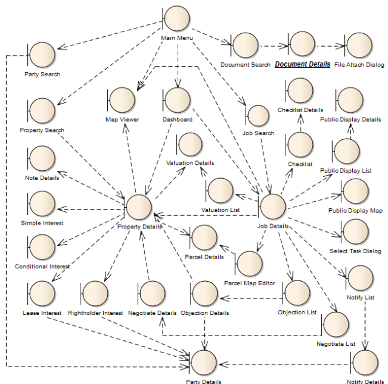

The SOLA State Land UI Navigation Diagram illustrates the screens of SOLA state Land and their primary navigation dependencies. Note that many of the dependencies to the Document Details screen have been omitted for clarity. Where a screen references documents, you should assume it also has a dependency to the Document Details screen.

SOLA State Land UI Navigation Diagram